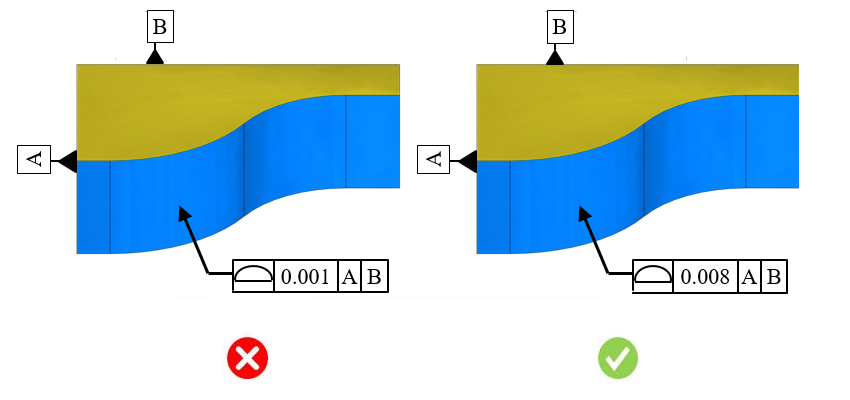

本ルールは、部品サイズの範囲に基づいて、最小表面プロファイル公差値をチェックします。
表面プロファイルは、表面の周囲に設定される三次元の公差ゾーンを表します。他の幾何公差記号では管理できない複雑な形状曲線に対しては、プロファイル公差が最適な選択肢となります。データムと組み合わせて使用した場合、サイズ、位置、姿勢、形状など、フィーチャーの幾何特性のあらゆる側面を管理します。不必要に厳しい表面プロファイル公差値を設定すると、追加の加工時間が発生し、部品全体のコストや検査コストが増加します。厳しい公差値が指定されることで、製造チームは形状および位置拘束の正確性を確保する必要があり、そのためには熟練した作業者が求められます。
一般的なガイドラインとして、不必要に厳しい公差は追加の加工時間を招く可能性があることが示されています。
DFMProでは、公差タイプ、部品サイズ範囲、およびそれに対応する公差値をユーザーが設定できます。
部品外形サイズ = 部品の最大対角長のおおよその値
ここでは、
Lt = 長さ
Wt = 幅
Ht = 高さ
Ldt = 部品の対角長

注記:
CADモデル内で指定されている公差は、eDrawingsレポートには表示されません。
ルール構成で設定された公差値は、公差ゾーンとして扱われます。
本ルールでは、面やエッジなど、CADフィーチャーに関連付け（参照）されている幾何公差のみが考慮されます。